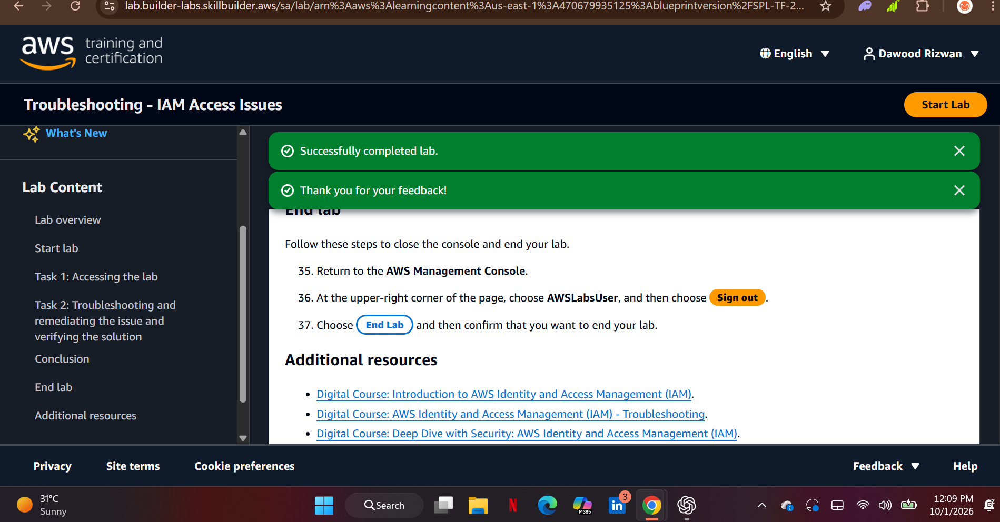

Fixing a failed
role switch.
A narrow IAM fix: the exact role-assumption grant, the correct trusted identity, and a repeatable retest.
GUIDED AWS BUILDER LABCOMPLETED 01 OCT 2026The problem
Operator-User could sign in but could not assume Operator-Role. The lab required the user to assume only that role, and the role to trust only that user. Broad administrative permissions would not satisfy the intended least-privilege solution.
Separate request errors from policy errors
The initial account field contained the literal placeholder instead of the numeric account value. I corrected it and retried; the generic role-switch error persisted. Only then did I inspect the IAM configuration using the lab's troubleshooting identity in a separate browser session.
What I inspected and changed
| Finding | Correction in the guided exercise |
|---|---|
| The user initially had zero permission policies. | Attached the permitted preconfigured policy with sts:AssumeRole on the exact target role ARN. |
| One candidate targeted lowercase operator-role. | Selected Policy 3, which targeted the exact Operator-Role name. |
| The original role trusted ec2.amazonaws.com. | Replaced the service principal with the exact Operator-User ARN. |
Policy scope
These excerpts explain the guided correction. The account value is intentionally a placeholder, and the examples are documentation rather than deployable policies.
Requester permission
{
"Effect": "Allow",
"Action": "sts:AssumeRole",
"Resource": "arn:aws:iam::ACCOUNT_ID:role/Operator-Role"
}Role trust
{
"Effect": "Allow",
"Principal": {
"AWS": "arn:aws:iam::ACCOUNT_ID:user/Operator-User"
},
"Action": "sts:AssumeRole"
}Verification
After both corrections, I returned to the Operator-User session and retried the same target role using the numeric account value. Console Home opened with Operator-Role shown as the active identity. The provider also recorded successful lab completion.

What I learned
Inspect the requesting identity's permission and the role's trust, rather than guessing from a generic console error. Match exact resources and keep remediation and retest sessions separate. A trust policy identifies who can assume a role; the role's permissions describe what its session can do.
Sources
- AWS Skill Builder: Lab - Troubleshooting - IAM Access Issues, SPL-TF-200-SITIAI-1 v1.0.7. Supplied policy text, screenshots and private Day 5 report.
- AWS role troubleshooting
- AWS: using trust policies with IAM roles